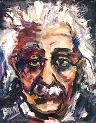
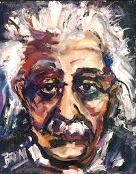

1
Papers published by Albert Einstein
2
DISCOVERIES & EXPERIENCES
Albert Einstein
A Universal Visionary, His words in today's context,
an explanation of gravity
Known For..
General relativity and teaching career of Albert Einstein
Quantum Theory of Light. Einstein’s quantum theory of light proposed that light is composed
of small packets of energy called photons that have wave-like properties.
E=mc2. He demonstrated the link between mass and energy that led to the nuclear energy
today.
Brownian Movement. This could by far be the best Albert Einstein discoveries, where his
observation of the zigzag movement particles in suspension, helped to prove the existence of
atoms.
General Theory of Relativity. Einstein proposed that gravity is a curved field in the
space-time continuum created by the existence of mass.
Hobbies
puzzles
reading books about nature
playing violin
Photo Collection
 

3
Blogs
I respond with pleasure to your Correspondent’s request that I should write something for
The Times on the Theory of Relativity.
After the lamentable breach in the former international relations existing among men of
science, it is with joy and gratefulness that
I accept this opportunity of communication with English astronomers and physicists. It was
in accordance with the high and proud tradition of English science that English scientific
men should have given their time and labour and that English institutions should have
provided the material means, to test a theory that had been completed and published in the
country of their enemies in the midst of war.
Two things are infinite: the universe and human stupidity; and I'm not sure about the universe.
There are only two ways to live your life. One is as though nothing is a miracle. The other is as though everything is a miracle.
I am enough of an artist to draw freely upon my imagination. Imagination is more important than knowledge. Knowledge is limited. Imagination encircles the world.
I speak to everyone in the same way, whether he is the garbage man or the president of the university.
Reality is merely an illusion, albeit a very persistent one.